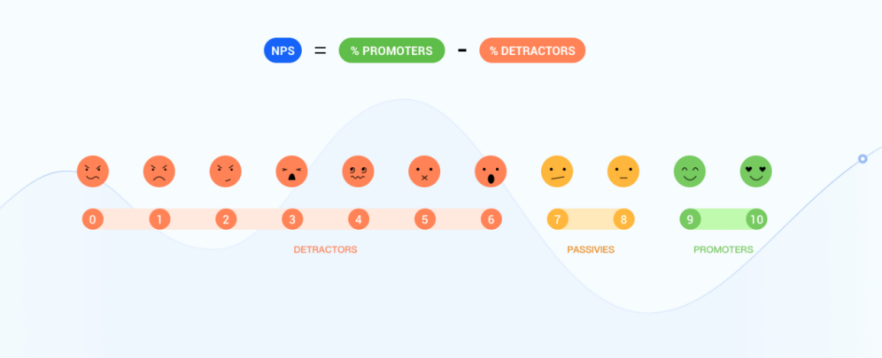

Back to Blog Home
Back to Blog Home
Effective NPS Survey Questions: Examples to Measure Customer Satisfaction and Loyalty
Net Promoter Score (NPS) is a commonly used metric to measure customer loyalty and satisfaction. It is a single-question survey developed by Fred Reichheld, a leading management consultant, in 2003. By asking customers a simple question about how likely they would recommend a product or service to others, companies can gather data to identify areas for improvement and develop effective marketing strategies.
What is NPS?
The NPS survey question is often framed as, "How likely are you to recommend our product/service/company to friends or colleagues?" The rating scale ranges from 0-10, with 0 being least likely and 10 being most likely.
Based on their responses, customers are classified as promoters, passives, or detractors:
● Promoters are customers who responded with a rating of 9-10, indicating high loyalty and a willingness to promote the business to others.
● Passives respond with a score of 7-8, indicating they are neutral in terms of loyalty.
● Detractors answer with a score of 0-6, indicating low loyalty and potential negative impact on the business.

Why NPS is widely used?
There are several reasons why the NPS has become so popular. One of the key benefits of the NPS is brief and straightforward. Respondents find them easy to answer and therefore, participation rates are typically high. Additionally, NPS surveys can be conducted at various points in the customer journey, such as after purchase, after customer service, or after product delivery. This enables businesses to capture customer feedback at crucial touchpoints and respond to customer concerns in a timely manner.
Another reason for the popularity of the NPS is that it provides businesses with valuable, actionable data. By asking customers whether they would recommend a business to others, the NPS helps businesses to identify their promoters, detractors, and passives. By knowing who the promoters, detractors, and passives are, businesses can gain insights into what they are doing right and where they need to improve. This information can inform a wide range of business decisions, from product development to marketing and customer service initiatives.
Some Sample Questions for NPS
1. NPS Question: On a scale of 0 to 10, how likely are you to recommend [Product/Service/Company] to a friend or colleague?
- 0 to 6: Detractors (Not likely to recommend)
- 7 to 8: Passives (Neutral)
- 9 to 10: Promoters (Likely to recommend)
Follow-up questions to gather more insights:
2. What is the primary reason for your score above?
3. What improvements or changes would make you more likely to recommend [Product/Service/Company] to others?
4. How would you rate the [specific aspect, e.g., customer service, product quality, user interface] of [Product/Service/Company]?"
- Poor
- Below Average
- Average
- Above Average
- Excellent
5. Is there any additional feedback you'd like to provide about your experience with [Product/Service/Company]?
6. How likely are you to continue using [Product/Service/Company] in the future?
- Very Unlikely
- Unlikely
- Neutral
- Likely
- Very Likely
7.Demographic Questions:
- Age: [Age range]
- Gender: [Male/Female/Non-binary/Prefer not to say]
- Location: [City, State, Country]
- Occupation: [Occupation or Industry]
Conclusion
In conclusion, the Net Promoter Score (NPS) is a popular metric for evaluating customer loyalty and satisfaction. By classifying customers into promoters, detractors, or passives, businesses can quickly identify areas for improvement and develop targeted marketing strategies to attract and retain loyal customers. The simplicity, ease of administration, and actionable insights provided by NPS surveys make it a widely used metric that can drive business success. It is also important to note that NPS surveys should be used in conjunction with other customer satisfaction metrics to gain a comprehensive understanding of customer perceptions and experiences.